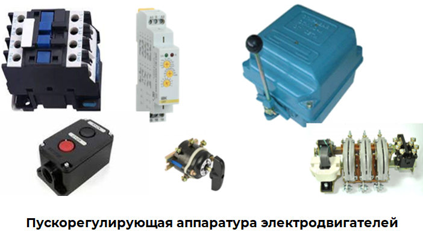

Пускорегулирующая аппаратура электродвигателей, ее техническое обслуживание
Пускорегулирующая аппаратура – это комплект электрических устройств и аппаратов, используемых для пуска и торможения электрических двигателей, изменения направления их вращения, регулирования частоты вращения и других настроек, а также для защиты при ненормальных режимах работы.
Важнейшим условием надежной работы пускорегулирующей аппаратуры является проведение систематического контроля за состоянием коммутационных узлов. Неплотное замыкание контактов и их загрязнение приводит к перегреву контактов, их оплавлению и полному выходу из строя всего аппарата. Для обеспечения надежной работы пускорегулирующих аппаратов системой планово-предупредительного ремонта предусматривается проведение технического обслуживания.
Пускорегулирующая аппаратура электродвигателей
Обслуживание пускорегулирующей аппаратуры заключается в выполнении следующих работ:
- систематический профилактический осмотр;
- чистка (устранение пыли, грязи и т.п.);
- смена перегоревших плавких вставок;
- проверка надежности заземления;
- чистка и регулировка контактов;
- испытание (измерение тока срабатывания, напряжения срабатывания, сопротивление изоляции);
- замена изношенных деталей.
В объём технического обслуживания пускорегулирующей аппаратуры входит:
- для пускорегулирующих аппаратов напряжением до 1000 В – осмотр, проверки, чистка, мелкий ремонт;
- для пускорегулирующих аппаратов напряжением выше 1000 В – регулярные осмотры, ежедневные осмотры, постоянный контроль работы электроаппаратов, выполнение мелкого ремонта, очистка от пыли, загрязнений и смазка осей и шарниров.
Техническое обслуживание пускорегулирующей аппаратуры выполняется в несколько этапов:
1. Первым этапом технического обслуживания является внешний осмотр аппаратуры.
Проверяется наличие видимых повреждений, деформаций или коррозии. При обнаружении повреждений производится замена или восстановление деталей. На этом же этапе проверяется состояние изоляции, контактов и системы охлаждения.
2. Вторым этапом технического обслуживания является проверка электрической цепи пускорегулирующей аппаратуры. Проверяется правильность подключения проводов и кабелей, а также качество и надежность соединений. При обнаружении проблем производится замена или ремонт проводки.
3. На третьем этапе технического обслуживания выполняют проверку работы аппаратуры. Поверяется правильность работы пускорегулирующей системы, функционирование защитных механизмов и регулирование электродвигателей. При обнаружении неисправностей необходимо провести диагностику и произвести ремонт или замену неисправных элементов.
Частота обслуживания ПРА зависит от условий эксплуатации, интенсивности использования и особенностей конкретного оборудования.
Техническое обслуживание пускорегулирующих аппаратов до 1000 В включает периодические осмотры, проверки, чистку и мелкий ремонт. Частота обслуживания определяется местными инструкциями, но не может быть реже 1 раза в 2-3 месяца.
В рамках технического обслуживания электроаппаратов напряжением выше 1000 В, выполняются следующие работы:
- регулярные осмотры, проводимые согласно графику, определенному местными условиями. Периодичность осмотров устанавливается не реже одного раза в месяц, за исключением работы в условиях повышенной влажности и агрессивной среды, в этих условиях осмотры должны проводится не реже двух раз в месяц.
- в электроустановках, где всегда присутствует дежурный персонал, регулярно проводятся ежедневные проверки, а осмотр электроустановок в ночное время необходимо проводить как минимум один раз в течение каждого месяца.
- постоянный контроль работы электроаппаратов, включая проверку нагрузки, нагрева и других параметров функционирования.
- выполнение мелкого ремонта, который не требует специальных выключений и может быть осуществлен в перерывах работы технологических установок.
- очистка от пыли, загрязнений и смазка осей и шарниров.